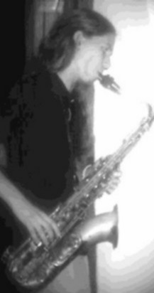
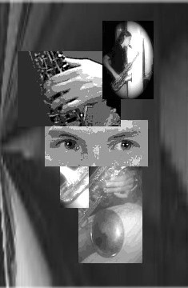

"Juego de manos"
Entrevista con el saxofonista GABRIEL ARNALDO ENGELLAND
Apenas comencé la entrevista
con este joven (25 años) y contemplé su mirada transparente, le pregunté si a sus creaciones musicales (es intérprete, pero fundamentalmente compositor) hubiera que ponerles un título, cuál le pondría... No supo responderme, pero atiné a decirle : "¿Niño?" y con extraordinaria seguridad asintió afirmativamente. Estamos tratando con un papá, que no titubea en hacernos sentir su creación "Juego de manos" en la cual, como telón de fondo, puede oirse balbucear al pequeño que dialoga con su creación. Y sin embargo, el artista tiene la más formal de las presentaciones: "Comenzó sus estudios en el año 1995 con el profesor Marcelo Seguí y continuó en el conservatorio provincial de música Félix T. Garzón (Córdoba -Argentina) con el profesor Guillermo Rebosolan." Participó en diversos grupos folclóricos con el objeto de difundir entre el público joven la cultura Argentina y obtuvo numerosos premios... y en septiembre de 2005 ,junto al Cuarteto de Saxos que integra, resultaron ganadores del 2º premio en la categoría música de cámara, 8º Concurso Bienal Juvenil. En abril del 2006 realiza el Concurso Final de 7º año para recibirse de “Profesor de Saxofón”, con la máxima calificación. |
 |
"Cuando tuve que responder acerca de quién
soy (para este artículo), lo primero que hice fue repiquetear la pregunta
a mi hijo que expresó, casi sin pensar -sos mi papá- luego le
pregunté a mi mujer y me respondió -sos mi amor-.
¿Quién soy en realidad?
Soy padre, soy hijo, soy amor y soy egoísmo; cada hombre es un universo
difícil de explicar y de entender. Mi universo está integrado
por diferentes amores: mis seres queridos, el arte y el mundo que me rodea,
son todos esos amores los que me convierten en lo que soy.
Cuando creo música trato de expresar y compartir sentimientos y emociones,
trato de compartir lo que soy.
La música es un poderoso lenguaje de comunicación, estos sentimientos
son difíciles de rotular (el arte es
difícil de rotular) puedo estar tan cerca de la música de cámara
contemporánea como de la música tradicional andina o de las polirrítmias(*)
africanas, cuando uno expresa sentimientos íntimos las definiciones pasan
a ser una mera formalidad y la música habla
por sí misma.
Hoy me dedico a disfrutar de todos los desafíos que me presenta la vida.
Cada día es un desafío, cada trabajo, cada nueva obra, cada tristeza,
el desafío es seguir caminando,
el desafío es ser feliz."
"En mi niñez y casi como un juego comencé
a tocar aerófonos andinos (Quenas, sikus, picullos y todo aquel
que tuviera oportunidad de conseguir) acercándome así a los ritmos
autóctonos del altiplano.
A los quince años comencé mis estudios de saxo en el Conservatorio
y luego, paralelamente, incursioné en
el jazz. Fue recién a los veinte cuando comencé a sentir la música
de una manera diferente:
Llegaron a mis manos material de artistas brasileros como Carlos Jobim (bossa
nova). Y músicos del jazz contemporáneo como Dave Holland o Hermeto
Pascoal que despertaron en mí gran interés
por la improvisación y los ritmos populares de raíces africanas
en su mayoría.
Es aquí cuando mis interpretaciones y creaciones comienzan a tener cierto
grado de madurez.
Ya en los últimos años del conservatorio conocí la música
de cámara contemporánea, descubriendo un lenguaje
que me era desconocido hasta el momento: Principalmente trabajando con imágenes
se libera de ataduras
y explota todas las posibilidades sonoras del instrumento.
 |
A la hora de componer, la selección de elementos
musicales no se da A esta altura no estoy cómodo en encasillamientos
o títulos; |
(*)polirritmias significa "muchos ritmos"; se le llama a la superposición de distintos ritmos